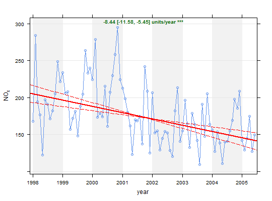

Theil-Sen slope estimates and tests for trend.
TheilSen(mydata, pollutant = "nox", deseason = FALSE, type = "default", avg.time = "month", statistic = "mean", percentile = NA, data.thresh = 0, alpha = 0.05, dec.place = 2, xlab = "year", lab.frac = 0.99, lab.cex = 0.8, x.relation = "same", y.relation = "same", data.col = "cornflowerblue", trend = list(lty = c(1, 5), lwd = c(2, 1), col = c("red", "red")), text.col = "darkgreen", slope.text = NULL, cols = NULL, shade = "grey95", auto.text = TRUE, autocor = FALSE, slope.percent = FALSE, date.breaks = 7, ...)
date and at
least one other parameter for which a trend test is required;
typically (but not necessarily) a pollutant.TRUE the function stl is used (seasonal trend
decomposition using loess). Note that if TRUE missing
data are first linearly interpolated because stl cannot
handle missing data.type determines how the data are split i.e.
conditioned, and then plotted. The default is will produce a
single plot using the entire data. Type can be one of the
built-in types as detailed in cutData e.g.
“season”, “year”, “weekday” and so on. For
example, type = "season" will produce four plots --- one
for each season.
It is also possible to choose type as another variable in
the data frame. If that variable is numeric, then the data will
be split into four quantiles (if possible) and labelled
accordingly. If type is an existing character or factor
variable, then those categories/levels will be used directly.
This offers great flexibility for understanding the variation of
different variables and how they depend on one another.
Type can be up length two e.g. type = c("season",
"weekday") will produce a 2x2 plot split by season and day of
the week. Note, when two types are provided the first forms the
columns and the second the rows.timeAverage for more details.statistic = "percentile" is chosen.avg.time. A value of zero
means that all available data will be used in a particular
period regardless if of the number of values available.
Conversely, a value of 100 will mean that all data will need to
be present for the average to be calculated, else it is recorded
as NA."year"."greyscale".TRUE (default) or FALSE. If
TRUE titles and axis labels will automatically try and
format pollutant names and units properly e.g. by subscripting
the ‘2’ in NO2.FALSE. Generally,
accounting for autocorrelation increases the uncertainty of the
trend estimate --- sometimes by a large amount.FALSE and the slope is expressed as an average units/year
change e.g. ppb. Percentage changes can often be confusing and
should be clearly defined. Here the percentage change is
expressed as 100 * (C.end/C.start - 1) / (end.year -
start.year). Where C.start is the concentration at the start
date and C.end is the concentration at the end date.
For avg.time = "year" (end.year - start.year) will be the
total number of years - 1. For example, given a concentration in
year 1 of 100 units and a percentage reduction of 5
years there will be 75 units but the actual time span will be 6
years i.e. year 1 is used as a reference year. Things are
slightly different for monthly values e.g. avg.time =
"month", which will use the total number of months as a basis
of the time span and is therefore able to deal with partial
years. There can be slight differences in the
estimate therefore, depending on whether monthly or annual
values are considered.date.breaks
up or down.cutData
and lattice:xyplot. For example, TheilSen passes
the option hemisphere = "southern" on to cutData
to provide southern (rather than default northern) hemisphere
handling of type = "season". Similarly, common axis and
title labelling options (such as xlab, ylab,
main) are passed to xyplot via quickText to
handle routine formatting.As well as generating the plot itself, TheilSen
also returns an object of class ``openair''. The object includes
three main components: call, the command used to generate
the plot; data, the data frame of summarised information
used to make the plot; and plot, the plot itself. If
retained, e.g. using output <- TheilSen(mydata, "nox"),
this output can be used to recover the data, reproduce or rework
the original plot or undertake further analysis.
An openair output can be manipulated using a number of generic
operations, including print, plot and
summary.
The data component of the TheilSen output includes
two subsets: main.data, the monthly data res2 the
trend statistics. For output <- TheilSen(mydata, "nox"),
these can be extracted as object$data$main.data and
object$data$res2, respectively.
Note: In the case of the intercept, it is assumed the y-axis crosses the x-axis on 1/1/1970.
The TheilSen function provides a collection of functions to
analyse trends in air pollution data. The TheilSen function
is flexible in the sense that it can be applied to data in many
ways e.g. by day of the week, hour of day and wind direction. This
flexibility makes it much easier to draw inferences from data
e.g. why is there a strong downward trend in concentration from
one wind sector and not another, or why trends on one day of the
week or a certain time of day are unexpected.
For data that are strongly seasonal, perhaps from a background
site, or a pollutant such as ozone, it will be important to
deseasonalise the data (using the option deseason =
TRUE.Similarly, for data that increase, then decrease, or show
sharp changes it may be better to use smoothTrend.
A minimum of 6 points are required for trend estimates to be made.
Note! that since version 0.5-11 openair uses Theil-Sen to derive the p values also for the slope. This is to ensure there is consistency between the calculated p value and other trend parameters i.e. slope estimates and uncertainties. The p value and all uncertainties are calculated through bootstrap simulations.
Note that the symbols shown next to each trend estimate relate to how statistically significant the trend estimate is: p $<$ 0.001 = ***, p $<$ 0.01 = **, p $<$ 0.05 = * and p $<$ 0.1 = $+$.
Some of the code used in TheilSen is based on that from
Rand Wilcox http://www-rcf.usc.edu/~rwilcox/. This mostly
relates to the Theil-Sen slope estimates and uncertainties.
Further modifications have been made to take account of correlated
data based on Kunsch (1989). The basic function has been adapted
to take account of auto-correlated data using block bootstrap
simulations if autocor = TRUE (Kunsch, 1989). We follow the
suggestion of Kunsch (1989) of setting the block length to n(1/3)
where n is the length of the time series.
The slope estimate and confidence intervals in the slope are plotted and numerical information presented.
Helsel, D., Hirsch, R., 2002. Statistical methods in water resources. US Geological Survey. http://pubs.usgs.gov/twri/twri4a3/. Note that this is a very good resource for statistics as applied to environmental data.
Hirsch, R. M., Slack, J. R., Smith, R. A., 1982. Techniques of trend analysis for monthly water-quality data. Water Resources Research 18 (1), 107-121.
Kunsch, H. R., 1989. The jackknife and the bootstrap for general stationary observations. Annals of Statistics 17 (3), 1217-1241.
Sen, P. K., 1968. Estimates of regression coefficient based on Kendall's tau. Journal of the American Statistical Association 63(324).
Theil, H., 1950. A rank invariant method of linear and polynomial regression analysis, i, ii, iii. Proceedings of the Koninklijke Nederlandse Akademie Wetenschappen, Series A - Mathematical Sciences 53, 386-392, 521-525, 1397-1412.
… see also several of the Air Quality Expert Group (AQEG) reports for the use of similar tests applied to UK/European air quality data, see http://uk-air.defra.gov.uk/library/aqeg/.
See smoothTrend for a flexible approach to
estimating trends using nonparametric regression. The smoothTrend
function is suitable for cases where trends are not monotonic and is
probably better for exploring the shape of trends.
# load example data from package data(mydata) # trend plot for nox TheilSen(mydata, pollutant = "nox")#> [1] "Taking bootstrap samples. Please wait." #># trend plot for ozone with p=0.01 i.e. uncertainty in slope shown at # 99 % confidence interval ## Not run: TheilSen(mydata, pollutant = "o3", ylab = "o3 (ppb)", alpha = 0.01) # trend plot by each of 8 wind sectors ## Not run: TheilSen(mydata, pollutant = "o3", type = "wd", ylab = "o3 (ppb)") # and for a subset of data (from year 2000 onwards) ## Not run: TheilSen(selectByDate(mydata, year = 2000:2005), pollutant = "o3", ylab = "o3 (ppb)")